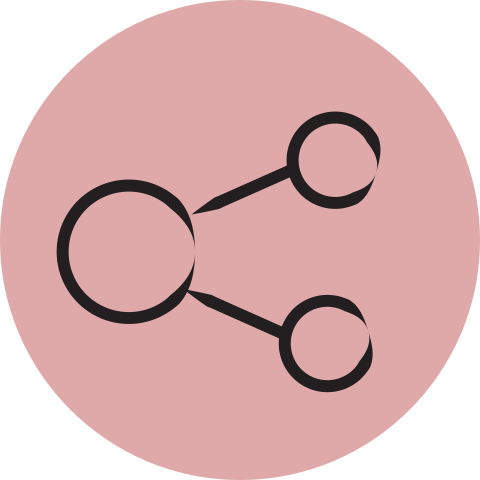
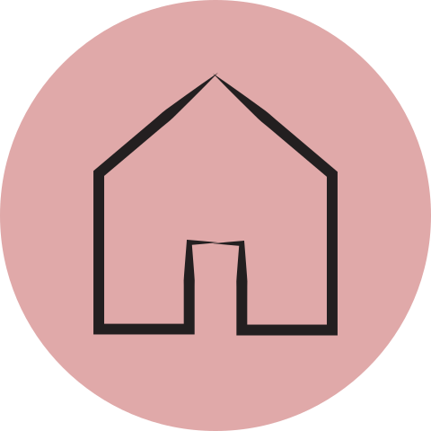

SVG Icon Set
Web Icons Set

user profile
Represents a user, or user's profile when logged into a web application.
message
Represents a message. Often seen in email and instant messaging applications.
This icon is sometimes further enhanced to indicate whether message(s) are sent, received, unopened, as well as the number of messages available.
favourite
Allows user to star or favourite an email, message, etc. This can be used as an organizational tool or to save threads to access at a later date.

share
Allows user to share any information, oftentimes through a variety of methods.

home button
Seen mostly in web browsers and on web pages to allow user to return to the home page.
image
Represents an image and/or gallery.
search
Allows user to search for anything, often in a web browser or on a web page.

about/information
Provides the user with information or details.
bookmark
Similar to favourites, users can bookmark a page, link, message/email, etc. so that the saved item may be accessed at a later time. This is often used in browsers when saving pages/links.
upload to cloud
User can upload files, folders and any other information onto the cloud from their device.